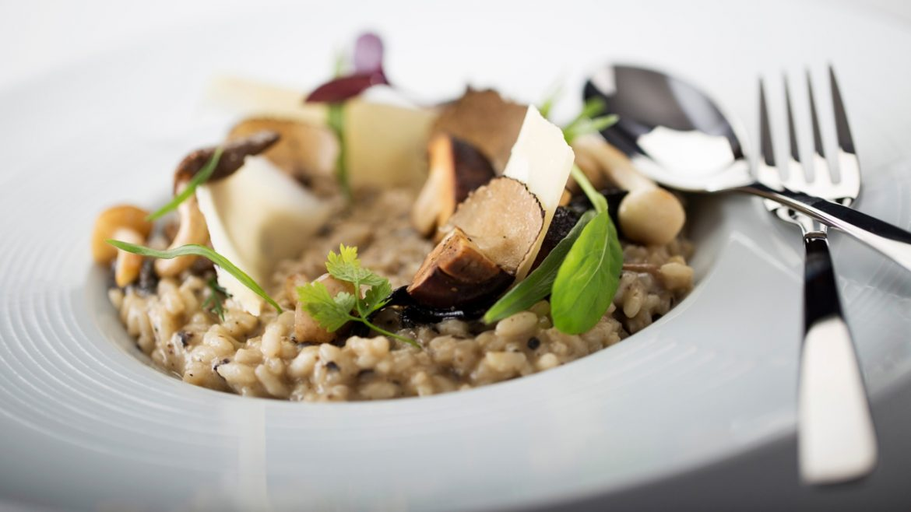

Risotto with Mushrooms

For the original recipe by the one and only Genarrrro contaldo:
Original recipe
Description
England was such a joy for me but never more so than when I discovered the many forests and woods full of fungi.
During autumn I like to go to the woods and forage; they are a haven of peace and where I feel at my best.
I have passed my passion onto my children and whenever we can at the weekend we will go on mushroom hunts,
both girls competing with each other as to who can find the first porcini and who can fill their basket the fastest!
Sometimes, as a treat, I bring the camping stove and we end the day with a mushroom feast, making a wonderful risotto.
If you don’t have wild mushrooms, then use cultivated ones plus dried porcini.
Ingredients:
- 4 tablespoons extra virgin olive oil
- 1 stick celery, finely chopped
- 1 small onion, finely chopped
- 375 gr arborio rice
- 175 ml dry white wine
- 200 gr mixed mushrooms, wild or cultivated, roughly chopped
(if you are using cultivated add 10 gr dried porcini regenerated in water – keep the water)
- 1.5 litres good vegetable stock, kept hot
- 50 gr parmesan cheese, freshly grated & extra for sprinkling
- 50 gr butter
- salt & pepper to taste
Steps:
- Heat the extra virgin olive oil in a medium heavy-based saucepan. Add the onion and celery and sweat until softened.
- Stir in the rice with a wooden spoon and coat each grain with the oil.
- Add the wine and allow to evaporate.
- Stir in the mushrooms and regenerated porcini, if using, adding a couple of tablespoons of the water.
- Add a couple of ladles of hot stock and, stirring continuously, cook until the stock is absorbed. Add more stock and repeat.
Continue adding stock in this way and stirring, for about 20 minutes until the rice is cooked – it should be soft on the outside but “al dente” on the inside.
- Remove from the heat and with a wooden spoon beat in butter and parmesan until the risotto has a creamy consistency.
- Check for seasoning and if necessary, add some salt & pepper.
- Leave to rest for one minute, then serve with an extra sprinkling of grated parmesan if desired.